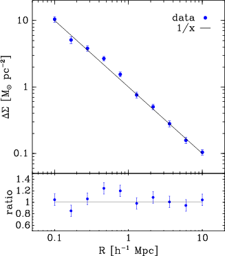
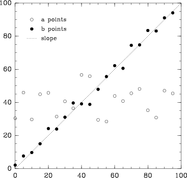

gallery
#!/usr/bin/env python
import biggles
import numpy
import math
x = numpy.arange(0, 3 * math.pi, math.pi / 30)
c = numpy.cos(x)
s = numpy.sin(x)
p = biggles.FramedPlot()
p.title = "title"
p.xlabel = r"$x$"
p.ylabel = r"$\Theta$"
p.add(biggles.FillBetween(x, c, x, s))
p.add(biggles.Curve(x, c, color="red"))
p.add(biggles.Curve(x, s, color="blue"))
p.write("example1.png", dpi=55)
p.write("example1.eps")
p.write("example1.pdf")
p.show()

import biggles
from numpy import log10, logspace, random
biggles.configure('default', 'fontsize_min', 2.5)
# set up some data
x = logspace(log10(0.1), log10(10.0), 10)
model = 1.0 / x
yerr = 0.1 * model
y = model + yerr * random.normal(size=x.size)
yratio = y / model
yratio_err = yerr / model
# build the FramedArray. Note the x axis
# is set to log for all plots
a = biggles.FramedArray(
2, 1,
xlog=True,
aspect_ratio=1.2,
xlabel=r'$R [h^{-1} Mpc]$',
row_fractions=[0.75, 0.25],
)
color = 'blue'
sym = 'filled circle'
mcurve = biggles.Curve(x, model)
pts = biggles.Points(x, y, type=sym, color=color)
epts = biggles.SymmetricErrorBarsY(x, y, yerr, color=color)
pts.label = 'data'
mcurve.label = '1/x'
key = biggles.PlotKey(0.9, 0.9, [pts, mcurve], halign='right')
a[0, 0] += pts, epts, mcurve, key
a[0, 0].ytitle = r'$\Delta\Sigma [M_{\odot} pc^{-2}]$'
a[0, 0].yrange = [0.05, 20.0]
a[0, 0].xrange = [0.05, 20.0]
a[0, 0].ylog = True # log y axis only for the top plot
a[1, 0] += biggles.Points(x, yratio, type=sym, color=color, size=3)
a[1, 0] += biggles.SymmetricErrorBarsY(x, yratio, yratio_err, color=color)
a[1, 0] += biggles.Curve(x, x * 0 + 1)
a[1, 0].ytitle = r'$ratio$'
a[1, 0].yrange = [0.5, 1.5]
a.write("example10.png", dpi=55)
a.write("example10.eps")
a.write("example10.pdf")
a.show()

#!/usr/bin/env python
import biggles
p = biggles.FramedPlot()
p.title = "title"
p.xlabel = r"$x$"
p.ylabel = r"$\Theta$"
p.ylog = 1
p.xlog = 1
p.add(biggles.LineX(0.5))
p.add(biggles.LineY(0.5))
p.write("example11.png", dpi=55)
p.write("example11.eps")
p.write("example11.pdf")
p.show()
#!/usr/bin/env python
import biggles
p = biggles.FramedPlot()
p.title = "triangle"
p.xlabel = r"$x$"
p.ylabel = r"$y$"
p += biggles.Polygon([0, 1, 0.5], [0, 0, 1])
p.write("example12.png", dpi=55)
p.write("example12.eps")
p.write("example12.pdf")
p.show()
#!/usr/bin/env python
import biggles
import numpy
import numpy.random
p = biggles.FramedPlot()
p.xrange = 0, 100
p.yrange = 0, 100
p.aspect_ratio = 1
x = numpy.arange(0, 100, 5)
yA = numpy.random.normal(40, 10, (len(x),))
yB = x + numpy.random.normal(0, 5, (len(x),))
a = biggles.Points(x, yA, type="circle")
a.label = "a points"
b = biggles.Points(x, yB)
b.label = "b points"
b.style(type="filled circle")
l = biggles.Slope(1, type="dotted")
l.label = "slope"
k = biggles.PlotKey(.1, .9)
k += a
k += b, l
p.add(l, a, b, k)
p.write("example2.png", dpi=55)
p.write("example2.eps")
p.write("example2.pdf")
p.show()

#!/usr/bin/env python
import biggles
import math
import numpy
x = numpy.arange(0, 3 * math.pi, math.pi / 10)
y = numpy.sin(x)
p = biggles.FramedPlot()
p.title = "Title"
p.xlabel = "X axis"
p.ylabel = "Y axis"
p.add(biggles.Histogram(y))
p.add(biggles.PlotLabel(.5, .5, "Histogram", color=0xcc0000))
t1 = biggles.Table(1, 2)
t1[0, 0] = p
t1[0, 1] = p
t2 = biggles.Table(2, 1)
t2[0, 0] = t1
t2[1, 0] = p
t2.write("example3.png", dpi=55)
t2.write("example3.eps")
t2.write("example3.pdf")
t2.show()
#!/usr/bin/env python
import biggles
import math
import numpy
x = numpy.arange(0, 2 * math.pi, math.pi / 20)
s = numpy.sin(x)
c = numpy.cos(x)
inset = biggles.FramedPlot()
inset.title = "inset"
inset.frame.draw_ticks = 0
inset.add(biggles.Curve(x, s, type="dashed"))
p = biggles.FramedPlot()
p.aspect_ratio = 1.
p.frame.tickdir = +1
p.frame.draw_spine = 0
p.add(biggles.SymmetricErrorBarsY(x, s, [0.2] * len(x)))
p.add(biggles.Points(x, s, color="red"))
p.add(biggles.Inset((.6, .6), (.95, .95), inset))
p.write("example4.png", dpi=55)
p.write("example4.eps")
p.write("example4.pdf")
p.show()
#!/usr/bin/env python
import biggles
import math
import numpy
x = numpy.arange(0, 3 * math.pi, math.pi / 10)
y = numpy.sin(x)
a = biggles.FramedArray(2, 2, title='title')
a.aspect_ratio = 0.75
a.xlabel = "x label"
a.ylabel = "y label"
a.uniform_limits = 1
a.cellspacing = 1.
a += biggles.LineY(0, type='dot')
a += [biggles.LineY(-1, type='dashed'), biggles.LineY(1, type='dashed')]
a[0, 0].add(biggles.Curve(x, .25 * y))
a[0, 1].add(biggles.Curve(x, .50 * y))
a[1, 0].add(biggles.Curve(x, .75 * y))
a[1, 1].add(biggles.Curve(x, y))
a.write("example5.png", dpi=55)
a.write("example5.eps")
a.write("example5.pdf")
a.show()
#!/usr/bin/env python
import biggles
import numpy
import math
x = numpy.arange(1 * math.pi, 3 * math.pi, math.pi / 30)
c = numpy.cos(x)
s = numpy.sin(x)
p = biggles.FramedPlot()
p.aspect_ratio = 1
p.frame1.draw_grid = 1
p.frame1.tickdir = 1
p.x1.label = "bottom"
p.x1.subticks = 1
p.y1.label = "left"
p.y1.draw_spine = 0
p.x2.label = "top"
p.x2.range = 10, 1000
p.x2.log = 1
p.y2.label = "right"
p.y2.draw_ticks = 0
p.y2.ticklabels = ["-1", "-1/2", "0", "1/2", "1"]
p.add(biggles.Curve(x, c, type='dash'))
p.add(biggles.Curve(x, s))
p.write("example6.png", dpi=55)
p.write("example6.eps")
p.write("example6.pdf")
p.show()

#!/usr/bin/env python
import biggles
import string
m = []
for line in open('continents.dat', 'r'):
if line[0] == '\n':
continue
line = line.strip()
# use list() for python 3
row = list(map(float, line.split()))
m.append(row)
p = biggles.HammerAitoffPlot()
p.ribs_l = 2
p += [biggles.Curve(m[2 * i], m[2 * i + 1]) for i in range(len(m) // 2)]
p.write("example7.png", dpi=55)
p.write("example7.eps")
p.write("example7.pdf")
p.show()
#!/usr/bin/env python
import biggles
import numpy
#
# Create example 2-dimensional data set of two solitons colliding.
#
n = 64
x = numpy.arange(-10., 10., 20. / n)
t = numpy.arange(-1., 1., 2. / n)
z = numpy.zeros((len(x), len(t)))
for i in range(len(x)):
for j in range(len(t)):
z[i, j] = -12. * (3. + 4. * numpy.cosh(2. * x[i] - 8. * t[j])
+ numpy.cosh(4. * x[i] - 64. * t[j])) / \
(3. * numpy.cosh(x[i] - 28. * t[j])
+ numpy.cosh(3. * x[i] - 36. * t[j]))**2
#
# Make contour component.
#
c = biggles.Contours(z, x, t, color="red")
#
# For fine-grained color control, the Contours component allows you to
# specify a function which returns the color applied to each contour line.
# The arguments passed to the function are:
#
# i integer index of contour (0,..,n-1)
# n total number of contours
# z0 z value of contour
# z_min minimum z contour value
# z_max maximum z contour value
#
# The function should return a valid color, or None for the default.
#
# Here we show how to set every other contour to blue. The remaining
# contours are drawn with the default color, defined above to be red.
#
def even_blue(i, n, z0, z_min, z_max):
if i % 2 == 0:
return 0x0000ff
return None
c.func_color = even_blue
#
# Similarly, Contours accepts similar functions for line type (.func_linestyle)
# and width (.func_linewidth). The arguments passed are the same.
#
#
# Make framed plot container and add contour component.
#
p = biggles.FramedPlot()
p.add(c)
#
# Output.
#
p.write("example8.png", dpi=55)
p.write("example8.eps")
p.write("example8.pdf")
p.show()
#!/usr/bin/env python
import biggles
from numpy import *
def mag(vec):
return sqrt(sum(vec * vec, -1))
def make_coloredpoints_plot():
# This is the magic recipe for an array of points from (0,0) to (10,10)
(x, y) = reshape(indices([10 + 1, 10 + 1]), (2, -1))
# Let's color the points by their distance from the point (3,7)
center = (3, 7)
rad = mag(transpose([x, y]) - center)
scaledrad = (1 - rad / max(rad))[:, newaxis]
# Go from light blue to intense red.
minColor = array([0.6, 0.9, 1.0])
maxColor = array([1.0, 0.2, 0.2])
colorrad = minColor + scaledrad * (maxColor - minColor)
cp = biggles.ColoredPoints(x, y, colorrad,
type='filled circle', size=6)
# make plot
p = biggles.FramedPlot()
p.title = "Colored Points Plot"
p.add(cp)
return p
def make_density_plot():
a = reshape(arange(90.0), (5, 6, 3))
a[..., 1] = 100 - a[..., 1]
d = biggles.Density(1 - (a / max(a.flat)), [[0, 0], [5, 10]])
# make plot
p = biggles.FramedPlot()
p.title = "Density"
p.add(d)
return p
p1 = make_coloredpoints_plot()
p2 = make_density_plot()
t = biggles.Table(1, 2)
t.aspect_ratio = 0.5
t[0, 0] = p1
t[0, 1] = p2
t.write("example9.png", dpi=55)
t.write("example9.eps")
t.write("example9.pdf")
t.show()